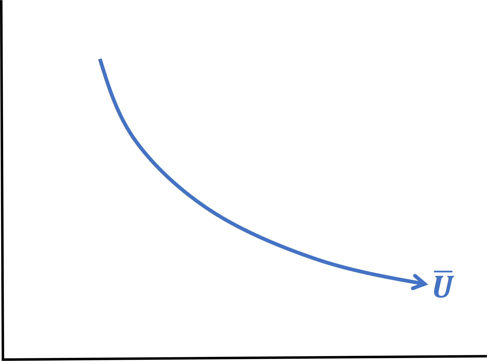
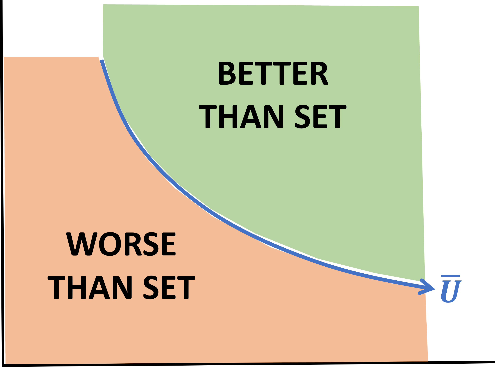
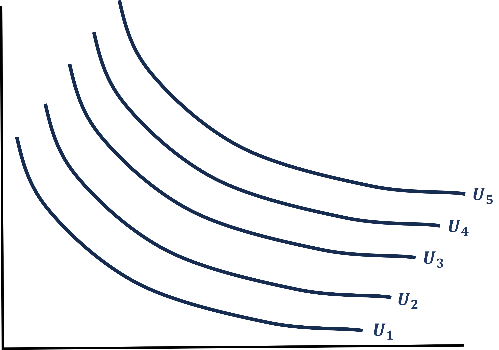
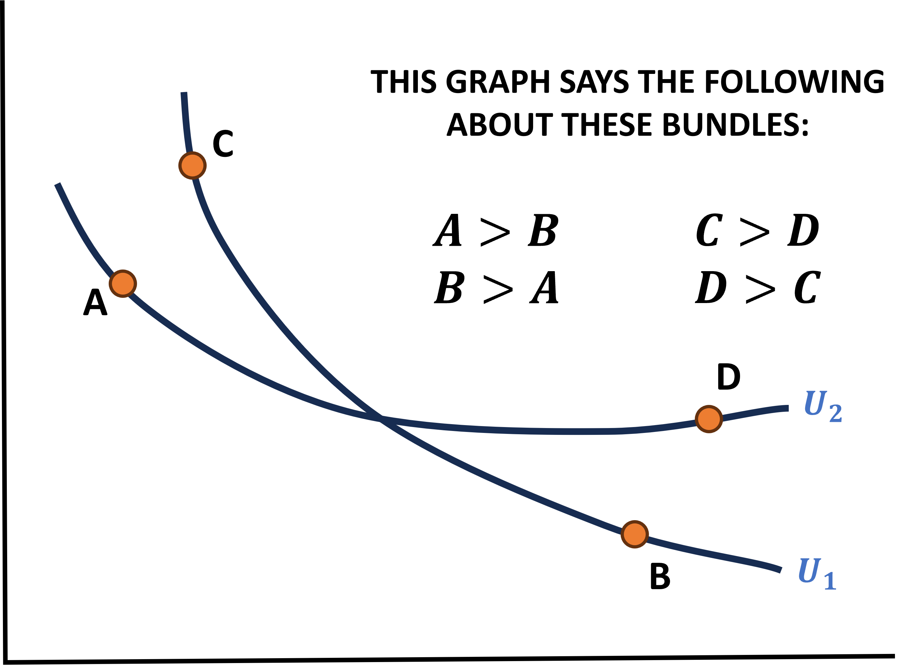
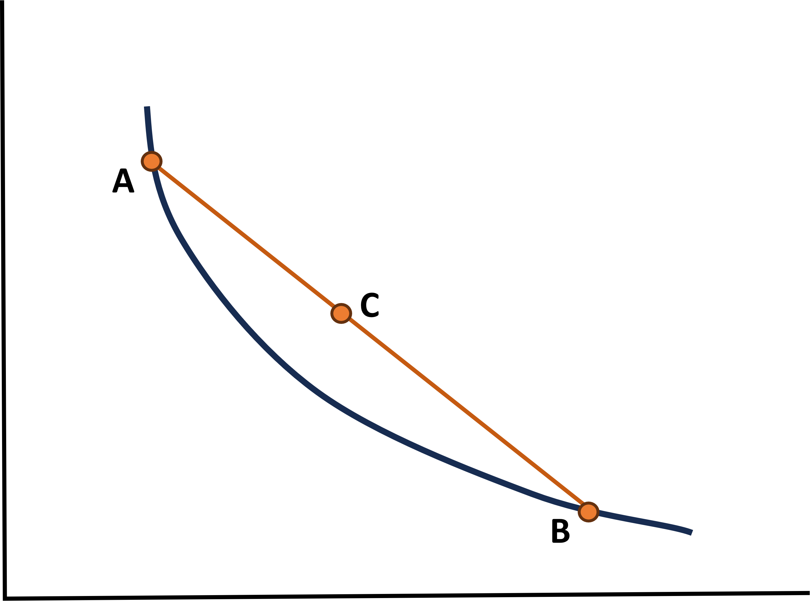
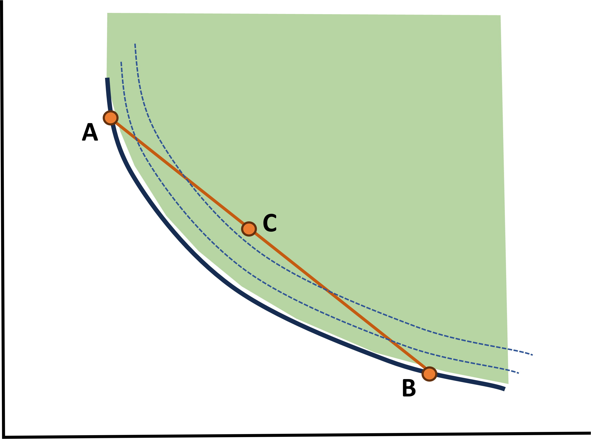
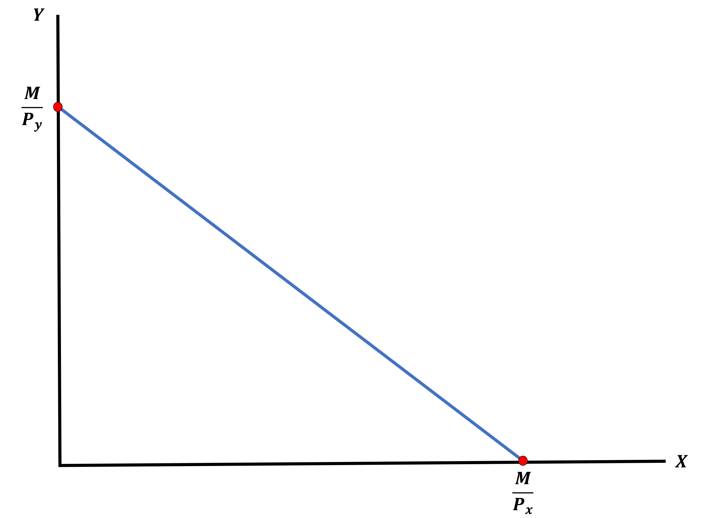
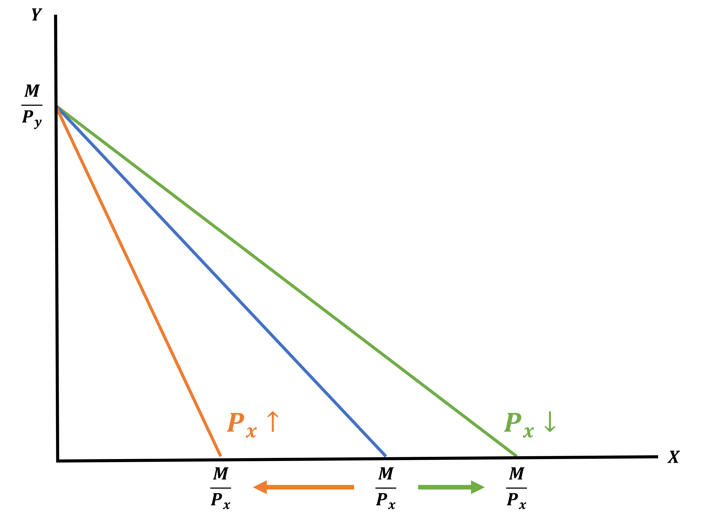
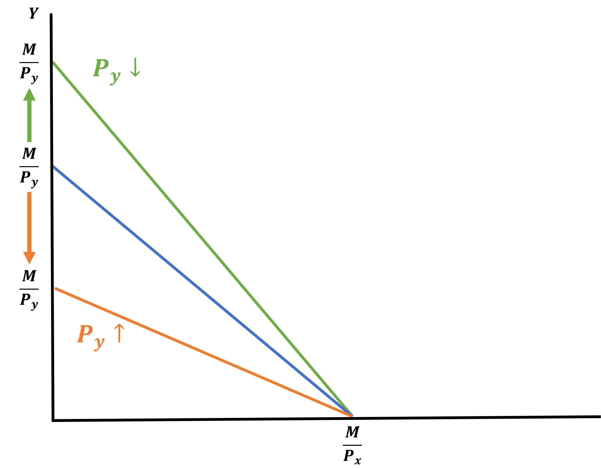

Consumer Behavior
EC 311 - Intermediate Microeconomics
2024
Chapter 4
Outline
- Topics
- Preferences and Utility (4.1)
- Indifference Curves (4.2)
- Budget Constraints (4.3)
- Other Stuff
- Remember Office Hours on Thursdays from 12:00 - 14:00 in PLC 523
- Also feel free to email me your questions at jrojas2@gmail.com
Preferences and Utility
Where Does Demand Come From?
Imagine the market for coffee on campus
Additionally, picture that the only other good that can be purchased is tea
On a basic level, demand for coffee is derived from individual’s choosing how to divide their income between coffee and tea
Where Does Demand Come From?
This is the problem we will be dealing with through the first half of the course
How does an individual allocate a finite amount of resources between two goods?
Note: There are clearly more than just two goods out there, so how can this be useful?
The main critique I always hear about economics courses is that they’re unrealistic. That’s mostly true, but we can learn about the aggregate by simplifying and making assumptions
Where Does Demand Come From?
We will frame the decisions as a two-good model where you may choose between:
- Food and durable consumption
- Leisure (not working) and consumption (paid for by earning a wage)
- Consumption now and consumption later
The key takeaway here is that we can frame many important choices as “two-good” decisions
- This makes things simpler for us to solve while still maintaining some sense of the real world
Determinants of Consumption
Consumption of any single good has two parts:
How it BENEFITS the consumer
- We call this UTILITY
What it COSTS the consumer
- What we give up to purchase the good
Let’s see what this means through a 1-good example \(\rightarrow\) Beer
Imagine the following scenario:
- You just arrived at the bar and have had zero drinks so far
- Each beer costs the same: $4
Beer
| Number of Beers | Overall Level of Happiness | Change in Level of Happiness |
|---|---|---|
| 0 | 0 | - |
| 1 | 10 | 10 |
| 2 | 25 | 15 |
| 3 | 35 | 10 |
| 4 | 40 | 5 |
| 5 | 42 | 3 |
| 6 | 30 | -12 |
If beer were free, how many beers should this person drink?
\[5\]
Now recall that beer costs $4, how many beers should this person drink?
\[4\]
Intuition Behind “Choice” in Economics
You cannot simply find the consumption amount that makes you the happiest. But why?
The goal is to maximize your utility whilst acknowledging you have constraints
The choice is simple: consume an additional unit until the cost of doing so outweighs the benefit
Commit this idea to memory: it is the crux of economics and drives everything we will be doing
We maximize utility up to the point that it does not make sense to do so
Back to Beer
| Number of Beers | Overall Level of Happiness | Change in Level of Happiness |
|---|---|---|
| 0 | 0 | - |
| 1 | 10 | 10 |
| 2 | 25 | 15 |
| 3 | 35 | 10 |
| 4 | 40 | 5 |
| 5 | 42 | 3 |
| 6 | 30 | -12 |
Some Questions:
- What is the marginal benefit:
- When you have not consumed any beer?
- When you have already consumed 3 beers?
- When you have already consumed 5 beers?
- What is the marginal cost of beer?
- Does it change as we consume more?
Being and Thinking at the Margin
We found two important values:
- Marginal Benefit (MB)
The additional benefit gained for an added unit of consumption
- Marginal Cost (MC)
The additional cost paid for an added unit of consumption
We can describe the decision-making process in a more formal manner:
- Initially: MB > MC \(\rightarrow\) Consume more!
- Eventually: MB < MC \(\rightarrow\) We went too far!
- At some point: MB = MC \(\rightarrow\) Just right!
Ask yourself: Why must they be equal?
What’s Going On? Graphically

What matters for choice is the marginal benefit of an additional beer
In other words, what matters is the change in utility that occurs as we move to the right on the graph
Recall: A change in \(y\) as \(x\) increases is the derivative
What’s Going On? Graphically - Derivatives

The derivative of this function is the marginal benefit of beer
This is why derivatives are important
We can use derivatives to figure out the optimal amount to consume
What’s Going On? Graphically - MB & MC

Recall: The optimal choice is the point where MB = MC
The MC = 4. So we would choose the quantity of beers where MB = 4
What’s Going On? Mathematically
The utility function of beer we’ve been using is:
\[U(x) = -x^{2} + 12x\]
Let’s practice: What would the optimal consumption amount be if the cost of beer is $2?
A Two-Good Problem
The beer example was fairly straightforward. But we will be dealing with making choices between two goods.
Before we dive in, a couple of things to consider are:
- When we spend our resources on one good, it cannot be spent on something else
- Because we are making decisions amongst both things, we need a cost relationship between them
- We do not measure our happiness (utility) in dollars
- We need to find a way to choose without directly comparing costs and benefits across goods
Enter Utility Functions
A Utility Function is a function of two variables:
\[U = f(x,y)\]
Some facts:
- \(x\) and \(y\) are the (positive) amounts of goods you consume
- The function converts \(x\) and \(y\) to happiness (utility) from consuming the two goods
For Example:
- Let’s say that the utility I receive from Beer (B) and Soda (S) can be modeled as:
\[U = f(B,S) = 10B + 2S\]
- Before, we were only interested in the slope of Beer
- Now, we are interested in the slopes of both Beer & Soda
Utility Functions - Beer & Soda
\[U = f(B,S) = 10B + 2S\]
For a function of two variables there are two slopes
- One for each partial derivative which we will call Marginal Utilities
In the Beer (B) and Soda (S) example we will have:
- The Marginal Utility of Beer (\(MU_{B}\))
- The Marginal Utility of Soda (\(MU_{S}\))
What are the Marginal Utilities of Beer and Soda?
Utility Functions - PB&J
Now find the Marginal Utilities for Peanut Butter and Jelly
\[U = f(P,J) = P^{2} \cdot J\]
What do Utility Functions even Mean?
They help us represent how people feel about goods \(x\) and \(y\)
There are certain properties that help us determine:
Do I like or dislike \(x\)?
Does how much I like \(x\) depend on how much \(x\) I already have?
Does how much I like \(x\) depend on how much \(y\) I have?
We can understand these properties by looking at the marginal utilities!
Utility Functions - Do I Like or Dislike \(x\)?
If I consume more \(x\), how does my utility move?
Beyond graphing the utility function, we need to find a way to answer this formally and mathematically
We can look at the sign of the derivative
- If the derivative of \(U\) with respect to (w.r.t.) \(x\) is:
Positive
I like \(x\)
Negative
I dislike \(x\)
Like or Dislike - Example
Given my utility curve for Beer (B) and Soda (S), what do I like or dislike?
\[U = f(B,S) = 10B + 2S\]
I like Beer
\[MU_{B} = 10 > 0\]
I like Soda
\[MU_{S} = 2 > 0\]
Does How Much I like \(x\) Depend on How Much I Already Have?
Remember to think at the margin
Is each additional unit of \(x\) bring me more, less, or equal happiness as the previous unit?
This is slightly trickier to figure out, but we still use marginal utility logic
In fact, we will use what is called the Second Derivative
Mathematically, this is the derivative of \(MU_{x}\) w.r.t. \(x\) and we ask:
- Is this second derivative positive, negative, or zero?
Depend on How Much I Already Have - Example
My utility for Cookies and Milk:
\[U = f(C,M) = C^{1/2}M^{1/2}\]
Cookies
\(MU_{c} = \dfrac{1}{2} \cdot C^{-1/2} \cdot M^{1/2}\) \(MU_{cc} = \dfrac{-1}{2} \cdot \dfrac{1}{2} \cdot C^{-1/2 - 1} \cdot M^{1/2}\) \(MU_{cc} = \dfrac{-1}{4} \cdot \dfrac{1}{C^{3/2}} \cdot M^{1/2}\) \(MU_{cc} = \dfrac{-M^{1/2}}{4C^{3/2}}\)
Milk
\(U_{mm} = \dfrac{-C^{1/2}}{4M^{3/2}}\)
\(MU_{cc}\) is negative so we can say that Cookies have a Decreasing Marginal Utility
Does How Much I Like \(x\) Depend on How Much \(y\) I Have?
This one is more straightforward: Does the marginal utility of \(x\) depend on \(y\)?
Mathematically, we take the derivative of \(MU_{x}\) w.r.t. to \(y\), and vice-versa.
- This is called the cross-partial derivative
Notationally, we have: \(MU_{xy}\)
Where we can determine the order of derivatives by looking at the subscript:
- \(x\) is first, and \(y\) is the second derivative
Depend on How Much of the Other Good I Have - Example
How about this utility for Peanut Butter and Jelly
\[U = f(P,J) = P^{2} \cdot J\]
Peanut Butter
\[\begin{align*} MU_{P} &= 2P^{2-1} \cdot J = 2PJ \\ MU_{PJ} &= 2P \cdot J^{1-1} = 2P \end{align*}\]
Jelly
\[\begin{align*} MU_{J} &= P^{2} \cdot J^{1-1} = P^{2} \\ MU_{JP} &= P^{2} = 2P \end{align*}\]
Notice that the cross-partials are the same and this will always be the case for any utility function!
Meaning of a Utility Function
What are Utility Functions?
- They are a flexible tool that help us describe the relationship between two godos and the utility (happiness) you gain from them
- They allow us to get a good intuition of how we can change function properties so they relate to the choice we are attempting to model
- Let’s think about some goods and decide what the utility function should look like
Modeling with Utility Functions
Let’s consider Homework and Pizza
First, we decide whether the good is desirable (good) or undesirable (bad)
- I’ll make the bold assumption that Homework is a bad and that Pizza is a good
Note: This implies that the marginal utilities are \(MU_{H} < 0\) and \(MU_{P} > 0\)
Modeling with Utility Functions - Example
Homework is a bad and Pizza is a good
Let’s also set the following requirements:
The marginal disutility of homework is larger when I have more of it
\(MU_{H}\) is decreasing in \(H \; \rightarrow \;\) We need an \(H\) in \(MU_{H}\)
The marginal utility of pizza is smaller when I have more of it
\(MU_{P}\) becomes smaller as I have more \(P \; \rightarrow \;\) We need an \(H\) in \(MU_{H}\)
\(MU_{P}\) does not depend on homework \(MU_{P}\) does not have an \(H\)
Attempt creating a utility function with the above characteristics
Modeling our Homework and Pizza
Here’s my version:
\[U(H,P) = -H^{2} + ln(P)\]
Now let’s prove that it meets the requirements
Homework is a bad and must be worse the more I have of interested
\[MU_{H} = -2H < 0\]
\[MU_{HH} = -2 <0\]
Pizza is a good, I get less joy from it the more I have, and it does not depend on how much homework I have
\[MU_{P} = \dfrac{1}{P} > 0 \]
\[MU_{PP} = \dfrac{-1}{P^{2}} < 0\]
\[MU_{PH} = 0 = MU_{HP}\]
Meaning of a Utility function
The single most important property of a utility function is that we can measure the relative preference for one good over the other
It measures how many units of \(y\) would you give up to get one more unit of \(x\)?
- We call this the Marginal Rate of Substitution (MRS)
\[MRS = \dfrac{MU_{x}}{MU_{y}}\]
Marginal Rate of Substition (MRS)
Here we are talking about the relative preference of \(x\) over \(y\), but how?
Consider \(U = f(x,y) = 4x + 2y\)
You get 4 units of utility for each \(x \; \rightarrow \; 4\)
You get 2 units of utility for each \(y \; \rightarrow \; 2\)
We can say that each \(x\) is twice as valuable as each \(y\)
Using our MRS formula we have:
\[MRS = \dfrac{MU_{x}}{MU_{y}} = \dfrac{4}{2} = 2\]
Types of Utility Functions
In Economics, we mainly deal with 4 typess of functions, each with its set of properties and tricks
Cobb-Douglas
Quasi-linear
Perfect Substitutes
Perfect Complements
Cobb-Douglas
\[U(x,y) = x^{a}y^{b}\]
Find the MRS of this general function
\[MRS = \dfrac{MU_{x}}{MU_{y}} = \dfrac{ax^{a-1}y^{b}}{bx^{a}y^{b-1}} = \dfrac{a}{b} \cdot \dfrac{x^{a-1-a}}{y^{b-1-b}} = \dfrac{a}{b} \cdot \dfrac{x^{-1}}{y^{-1}} = \dfrac{a}{b} \cdot \dfrac{y}{x}\]
The MRS for a Cobb-Douglas will always look like
\[\dfrac{a}{b} \cdot \dfrac{y}{x}\]
Cobb-Douglas: Keys to Remember
\[MRS = \dfrac{a}{b} \cdot \dfrac{y}{x}\]
The MRS is a ratio of \(y\) to \(x\), multiplied by a constant
MRS is your willingness to trade \(y\) for \(x\)
As you get more \(x\), the MRS goes down
As you get more \(y\), the MRS goes up
Cobb-Douglas - Example
\[U(x,y) = x^{3}y^{1/2}\]
Find the MRS of this utility function
\[MRS = \dfrac{MU_{x}}{MU_{y}} = \dfrac{3x^{2}y^{1/2}}{1/2x^{3}y^{-1/2}} = \dfrac{3}{1/2} \cdot \dfrac{y^{1/2}y^{1/2}}{x^{3}x^{-2}} = 6 \cdot \dfrac{y}{x}\]
If we recall that \(MRS = \dfrac{a}{b} \cdot \dfrac{y}{x}\) then we can take a shortcut:
\[MRS = \dfrac{a}{b} \cdot \dfrac{y}{x} \rightarrow \dfrac{3}{1/2} \cdot \dfrac{y}{x} = 6 \cdot \dfrac{y}{x}\]
Quasi-Linear
\[U(x,y) = a \cdot ln(x) + b \cdot y\]
Where \(a \cdot ln(x)\) is the “quasi” part and \(b \cdot y\) is the “linear” part
Find the MRS of this general function
\[MRS = \dfrac{MU_{x}}{MU_{y}} = \dfrac{a/x}{b} = \dfrac{a}{b} \cdot \dfrac{1}{x}\]
Quasi-Linear: Keys to Remember
\[MRS = \dfrac{a}{b} \cdot \dfrac{1}{x}\]
The MRS is a constant times \(1/x\)
As you get more \(x\), the MRS decreases
As you get more \(y\), the MRS remains the same
Quasi-Linear - Example
\[U(x,y) = 1/3 \cdot ln(x) + y\]
Find the MRS of this utility function
\[MRS = \dfrac{MU_{x}}{MU_{y}} = \dfrac{1/3 \cdot 1/x}{1} = \dfrac{1}{3} \cdot \dfrac{1}{x}\]
Using our shortcut we get:
\[MRS = \dfrac{a}{b} \cdot \dfrac{1}{x} = \dfrac{1/3}{1} \cdot \dfrac{1}{x} = \dfrac{1}{3} \cdot \dfrac{1}{x}\]
Perfect Substitutes
\[U(x,y) = a \cdot x + b \cdot y\]
Find the MRS of this general function
\[MRS = \dfrac{MU_{x}}{MU_{y}} = \dfrac{a}{b}\]
Keys to Remember
- MRS is a constant
Perfect Substitutes - Example
\[U(x,y) = 6x + \dfrac{1}{2} y \]
Find the MRS of this utility function
\[MRS = \dfrac{MU_{x}}{MU_{y}} = \dfrac{6}{1/2} = 12\]
And our shortcut shows:
\[MRS = \dfrac{6}{1/2} = 12\]
Perfect Complements
\[U(x,y) = \min \{a \cdot x, b \cdot y \}\]
This utility function requires a different form of intuition
Let’s first think of a simple example:
Imagine we are trying to make some hot chocolate which requires 1 pack of chocolate powder and 12 oz of milk
\[U(x,y) = \min \{1 \, choco, 12oz \, milk \}\]
You check your kitchen and find that there are 3 packs of chocolate powder and you have 15 oz of milk in your fridge
How many hot chocolates can we make?
Perfect Complements Intuition
These are goods that have to be consumed together in an exact proportion in order to produce any utility
There is no MRS, so we use a property called the No-Waste Condition:
\[U(x,y) = \min \{a \cdot x, b \cdot y \}\]
\[a \cdot x = b \cdot y\]
Perfect Complements: Keys to Remember
MRS is not defined (We cannot take a derivative)
We can use another form of logic called No-Waste Condition:
When \(a \cdot x < b \cdot y\) you will give up any \(y\) you can to get more \(x\)
When \(a \cdot x < b \cdot y\) you will give up any \(x\) you can to get \(y\)
Perfect Complements - Example
\[U(x,y) = \min \{ \dfrac{x}{2}, \dfrac{y}{4} \}\]
Find the No-Waste Condition of this utility function
No-Waste Condition is \(\dfrac{x}{2} = \dfrac{y}{4} \rightarrow 4x = 2y \rightarrow 2x = 2\)
We can say:
If \(2x > y \; \rightarrow \;\) Too much \(x\), so we would trade some \(x\) for some \(y\)
If \(2x < y \; \rightarrow \;\) Too much \(y\), so we would trade some \(y\) for some \(x\)
Bundles
When you have a utility function of two goods, any given combination of those two goods is called a Bundle
- Every bundle has an associated utility level
Take the following utility function and bundles
\[U(x,y) = x^{2}y\]
Bundle 1 is (3,2)
\[\begin{align*} U(3,2) &= 3^{2} \cdot 2 \\ &= 9 \cdot 2 = 18 \end{align*}\]
Bundle 2 is (1,0)
\[\begin{align*} U(1,0) &= 1^{2} \cdot 0 \\ &= 1 \cdot 0 = 0 \end{align*}\]
Bundles & Axioms of Preferences
We will use the following axioms about preferences between bundles to ensure logical consistency
- Completeness
- “More is Better”
- Transitivity
These come from economic theory so they will help you think like an economist but do not think this tells us how people behave
We are attempting to successfully predict behavior, so we will simply assume that everyone behaves accordingly
Completeness
We say that preferences are always complete. So when comparing bundles A and B, you can always say:
I prefer A to B (\(A \succeq B\))
I prefer B to A (\(A \succeq B\))
I am indifferent between A and B (\(A \sim B\))
This allows us to compare and order any pair of bundles
“More is Better”
Or at least more is no worse than less
In general, if a good is desirable we will want more of it
- However, sometimes products can be bads (instead of goods) and we would, obviously, want less of those
Transitivity
Preferences are transitive. This means that when comparing bundles A, B, and C you can get logical orderings through rankings:
- If you prefer B to A (\(B \succeq A\)) and C to B (\(C \succeq B\)) then you must prefer C to A (\(C \succeq A\))

Transitivity
What would this graph mean?
All bundles are preferred equally!
Preferences Assumptions
All of these are necessary to understand utility funcitons and be able to graph them
To do so we first need to learn about Indifference Curves
Indifference Curves
What is Indifference?
It is exactly what it sounds like between two bundles
- Any two bundles that give the same utility level makes you indifferent between those two Bundles
For example, for the utility of \(U(x,y) = 2x + 3y\) I am indifferent between bundles (3,2) and (0,4)
\[\begin{align*} U(3,2) &= 2(3) + 3(2) = 6 + 6 = 12 \\ \\ U(0,4) &= 2(0) + 3(4) = 12 \end{align*}\]
Indifference Set
Given a utility function and a level of utility, you can find a whole set of bundles that you are indifferent between
For example, let \(U(x,y) = x + y\) and set \(U = 10\). Then we can find an infinite set of \(x\) and \(y\) that will give us our stated utility level
\[\begin{align*} x &= 10 \\ x &= 9 \\ x &= 8 \\ &. \\ &. \\ &. \end{align*}\]
\[\begin{align*} y &= 0 \\ y &= 1 \\ y &= 2 \\ &. \\ &. \\ &. \end{align*}\]
Indifference Curves
We can create a function that helps us find ALL possible bundles that make you indifferent at a given utility level
We call this an Indifference Curve
For our previous utility function \(U(x,y) = x + y\) where \(U = 10\), we solve for \(y\) and get:
\[\begin{align*} U(x,y) &= x + y \\ \\ 10 &= x + y \\ \\ 10 - x &= y \rightarrow \text{Indifference Curve (IC)} \end{align*}\]
Indifference Curve - Example
\[U(x,y) = xy \;\; \text{where} \; U = 16\]
What type of Utility Function is this?
- It is a Cobb-Douglas \(x^{a}y^{b} \text{ where } a = b = 1\)
What is the associated Indifference Curve?
\[16 = xy \rightarrow y = \dfrac{16}{x} \rightarrow \text{ IC }\]
Indifference Curves
So why do we care about these curves?
- We can graph them
- Graphing is a key step to figuring out how to solve an individual’s choice problem
Each utility function has a unique shape that we will learn
Let’s Draw - Perfect Substitutes
\[U(x,y) = 3x + y \; \text{ with } \; U = 6, \, 9, \, 15\]
First, find the indifference curves for each Utility value
\[U = 6\]
\[y = 6 - 3x\]
\[U = 9\]
\[y = 9 - 3x\]
\[U = 15\]
\[y = 15 - 3x\]
Next, we graph these functions
Let’s Draw - Perfect Complements
\[U(x,y) = \min \{ x, \dfrac{y}{2} \} \; \text { with } U = 2, \, 8, \, 9\]
Find the indifference curves for each utility value
\[U = 2\]
\[x = 2 \; \text{ or } y = 4\]
\[U = 8\]
\[x = 8 \; \text{ or } y = 16\]
\[U = 9\]
\[x = 9 \; \text{ or } y = 18\]
Next, we graph these functions
Let’s Draw - Cobb-Douglas
\[U(x,y) = x^{1/2}y \; \text{ with } U = 4, \, 8, \, 10\]
Find the indifference curves for each utility value
\[U = 4\]
\[y = \dfrac{4}{x^{1/2}}\]
\[U = 8\]
\[y = \dfrac{8}{x^{1/2}}\]
\[U = 10\]
\[y = \dfrac{10}{x^{1/2}}\]
Next, we graph these functions
Let’s Draw - Quasi-Linear
\[U(x,y) = ln(x) + y \; \text{ with } U = 5, \, 15, \, 20\]
Find the indifference curves for each utility value
\[U = 5\]
\[y = 5 - ln(x)\]
\[U = 15\]
\[y = 15 - ln(x)\]
\[U = 20\]
\[y = 20 - ln(x)\]
Next, we graph these functions
Indifference Curve - Rules
It is very important that you understand the intuition behind indifference curves
Let’s view an example that can help:
Consider Weather Reports:
On cold days, what the weather feels like is a function of:
Temperature
Windchill
- An indifference curve represents all of the different combinations of temperature and windchill that cause you to feel the exact same thing
- If the windchill is suddenly lower, what must intuitively happen to the temperature to keep you feeling the same outside?
If windchill \(\downarrow\) then temperature \(\uparrow\)
Indifference Curve - Rules
We use this exact same logic for utility between two goods
Intuitively, if I want to stay at the same level of happiness as I lose some \(y\), what must happen to \(x\)?
- I need more of \(x\)
This is why we read them from left to right and why they have a negative slope
- I know the perfect complements is odd but the same logic tends to apply
Formal Indifference Curve Rules
All of the stuff from before can be formalized into the following 3:
- Monotonicity: Indifference curves always go from the top left to the bottom right of the graph without changing direction at any point
- Non-Crossing: If at least two curves cross, this leads to logical contradictions
- Convex: Balanced combinations of two goods are preferred to extreme outcomes (A lot of one good, little of the other)
Monotonicity
ICs always go from the top left to the bottom right without changing direction
Monotonicity
Additionally, this helps us visualize two important sets of bundles
Non-Crossing
This is the expected behavior of ICs. There are infinitely many, each representing a unique level of Utility
Non-Crossing - Logical Contradiction
If ICs cross, they are contradictions
Convex
A balanced combination of two goods are preferred to extreme outcomes
Convex
Recall the Better-than-set
What About the Other Functional Forms?
I drew Cobb-Douglas curves (mostly because they’re easier to illustrate these properties) but what about Perfect Complements or Perfect Substitutes?
- They fulfill all 3 properties, but not strongly
Perfect Complements
- Never Crosses
- Convex
- Wealky Monotonic
Perfect Substitutes
- Never Crosses
- Monotonic
- Weakly Convex
Let’s look at the board again
Most Important Facts of Indifference Curves
Recall the intuition of what a movement along the indifference curve means:
- You are trading \(y\) for \(x\), holding constant your level of utility
- The slope of the indifference curve measures your willingness to tradeoff between \(x\) and \(y\)
- This is also known as the Marginal Rate of Substition (times \(-1\))
Most Important Facts of Indifference Curves
This Marginal Rate of Substition (MRS) thing is pretty important
First, why is the slope the negative MRS?
- The MRS is the ratio of the effect of increasing \(x\) on your utility and the effect of increasing \(y\) on your utility
- \(\dfrac{MU_{x}}{MU_{y}}\)
The Indifference Curve slope is all about keeping the utility level constant while we move \(x\) and \(y\) in opposite directions
Therefore the IC slope = -MRS
Simple Mathematical Proof
For
\[U(x,y) = ax + by\]
- Find the MRS and times -1
\[\begin{align*} MRS &\dfrac{MU_{x}}{MU_{y}} = \dfrac{a}{b} \\ -MRS &= \dfrac{-a}{b} \end{align*}\]
- Find the IC and it’s slope
\[\begin{align*} \bar{U} &= ax + by \\ \bar{U} - ax &= by \\ \dfrac{\bar{U}}{b} - \dfrac{ax}{b} &= y \end{align*}\]
\[\text{Slope is the derivative! } \rightarrow \;\; \dfrac{\partial y}{\partial x} = \dfrac{-a}{b}\]
Indifference Curves
From this lecture you have learned:
Everything about utility functions and how to use them to find an MRS
Everything about Indifference Curves and how the IC slope relates to the MRS
The MRS is going to be key to solving utility maximization problems
Mathematically (Using derivatives)
Graphically (Drawing ICs)
However, when we maximize utility functions we have constraints, we called these Budget Constraints
Budget Constraints
Budgets
Economic Theory says that individuals make themselves as happy as they possibly can, after choosing from a set of all bundles they can afford
- We do not just maximize utility functions, but rather we maximize them subject to Budget Constraints (BC)
Budgets - Variables
Inside a budget constraint we use the exact same variables we use in our utility function, namely \(x\) and \(y\)
But we’ll need to introduce some new notation and terminology:
The price of good \(x \; \rightarrow \; P_{x}\)
The price of good \(y \; \rightarrow \; P_{y}\)
Your income, budget, or money-on-hand \(\rightarrow \; M\)
- The book also calls this \(I\)
Budgets - Functional Form
Putting together our variables we get our Budget Constraint
\[P_{x} \cdot x + P_{y} \cdot y \leq M\]
Do not let the inequality \(leq\) scare you, it just means we can spend less than our total income
However, in our applications we are going to treat it as a strict equality
\[P_{x} \cdot x + P_{y} \cdot y = M\]
And let’s think why?
- If we are maximizing utility, it does not make sense to leave any income unspent!
Budgets - Spending All Our Income
But do we usually spend all of our money?
Of course not, but here is how to think about it in the economics sense:
When you go to the grocery store you make to choices before even stepping inside:
How much to spend at the store
What to spend it on
- Once you allocate your budget, you usually spend all of it
The trick is to create the context in which it makes sense that everything gets spent
Let’s Construct A Budget Constraint
First, we need our two goods from before: Beer (\(B\)) and Soda (\(S\))
Let’s label everything properly:
\(B = \text{Beer}\)
\(S = \text{Soda}\)
\(P_{B} = \$4\)
\(P_{S} = \$2\)
\(M = \$20\)
What does the Budget Constraint look like?
\[B \cdot P_{B} + S \cdot P_{S} = M\]
\[4B + 2P = 20\]
Let’s Graph A Budget Constraint
We graph the budget in the same space in as our IC, but what are we graphing?
\[P_{x} \cdot x + P_{y} \cdot y = M\]
And thankfully, this is just a straight line
Bringing Intuition into Budget Constraint Graphs
\[P_{x} \cdot x + P_{y} \cdot y = M\]
Thinking intuitively, this graph represents:
- All combinations of \((x,y)\) that cost exactly \(M\)
- If we spend nothing on good \(y\), what is the most possible \(x\) that we can purchase?
\[\begin{align*} P_{x} \cdot x + P_{y} \cdot 0 &= M \\ P_{x} \cdot x &= M \\ x &= \dfrac{m}{P_{x}} \end{align*}\]
Let’s Graph A Budget Constraint
Following the logic we just did, the budget line will connect two points:
One for when we buy only \(x\) and one for when we buy only \(y\)
\[(\dfrac{M}{P_{x}}, 0) \text{ and } (0, \dfrac{M}{P_{y}})\]

Interpreting the Slope of the Budget Constraint
The Budget Constraint is the line:
\[y = \dfrac{M}{P_{y}} - \dfrac{P_{x}}{P_{y}} \cdot x \;\; \text{ where the slope is } \; -\dfrac{P_{x}}{P_{y}}\]
Now, let’s define \[P_{x} = \dfrac{\$}{x} \text{ and } P_{y} = \dfrac{\$}{y}\]
We get this result in terms of units!
\[\dfrac{P_{x}}{P_{y}} = \dfrac{\$/x}{\$/y} = \dfrac{\$}{x} \cdot \dfrac{y}{\$} = \dfrac{y}{x}\]
The Slope of the Budget Constraint
As we just saw, the price ratio \(P_{x}/P_{y}\) can be measured in units of \(x\) per units of \(y\)
We had already seen something that is measured in units \(\rightarrow\) the MRS
This leads us to understand the differences between the two:
- The MRS represents how much \(y\) you would be willing to give up in order to get a unit of \(x\)
- The Price Ratio represents how much \(y\) you would have to give up in order to get a unit of \(x\)
What Happens When Things Change?
Budgets are not static. Prices and income can change based on market conditions so it is important to understand the effects when factors change
We can have changes in income (increase or decrease)
Price of \(x\) can change (increase or decrease)
Price of \(y\) can change (increase or decrease)
Note - We normally consider what happens when only one of the possible factors change, and hold all others fixed
Changes in Income
What happens to the budget if income \((M)\) increases?
\(\dfrac{M}{P_{x}}\), the maximum amount of \(x\) that can be purchased goes up
\(\dfrac{M}{P_{y}}\), the maximum amount of \(y\) that can be purchased goes up
The slope of the BC \((-P_{x}/P_{y})\) stays the same
Income changes affect the overall amount an individual can consume, but has no effect on the relative cost of the goods
Intuitively, the opposite is true if income \((M)\) decreases
Changes in Income - Graph
Changes in Prices
What happens to the budget if the price of good \(x\) \((P_{x})\) increases?
The maximum amount of \(x\) that can be consumed goes down \((\dfrac{M}{P_{x}}) \downarrow\)
The maximum amount of \(y\) that can be consumed stays the same \((\dfrac{M}{P_{x}})\)
The price ratio \((- \dfrac{P_{x}}{P_{y}})\) becomes steeper
Once more, the opposite happens with a decrease
How about a shift in \(P_{y}\) ?
Changes in Prices - Graph
EC311 - Lecture 03 | Consumer Behavior